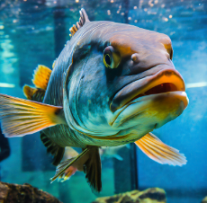

A. El adjetivo
Antes de elaborar nuestros propios carteles tenemos que repasar LOS ADJETIVOS para que nuestro cartel tenga riqueza de vocabulario.
¡ Empezamos !
Anota la información en tu diario de aprendizaje.

¿ Qué son los adjetivos ?
Los adjetivos son palabras que nos ayudan a describir o calificar sustantivos, es decir, cosas, personas o lugares. Los adjetivos nos dicen cómo es el sustantivo.
Por ejemplo: El niño travieso juega con la pelota blanca. Los sustantivos son niño y pelota y los adjetivos travieso y blanca.
Cómo identificar los adjetivos
Podemos identificar los adjetivos haciendo preguntas al sustantivo. Por ejemplo:
¿ Cómo es el niño ? El niño es travieso.
¿ Cómo es la pelota ? La pelota es blanca.
Género y número
También, los adjetivos pueden variar en género (masculino o femenino) y número (singular o plural) para concordar con el sustantivo al que acompañan. Por ejemplo:
Sustantivo masculino singular: niño travieso.
Sustantivo femenino singular: niña traviesa.
Sustantivo masculino plural: niños traviesos.
Sustantivo femenino plural: niñas traviesas.
Lectura facilitada
Vamos a recordar qué tipo de palabras son importantes
para decir cómo es o cómo está una persona.
Los adjetivos acompañan al sustantivo.
Dicen las cualidades.
Concuerdan con el sustantivo en género y número.
Veo, veo. Expresión escrita

Piensa en un objeto y no se lo digas a nadie. Escribe los adjetivos que describan a ese objeto teniendo en cuenta los siguientes aspectos:
Tamaño:
Forma:
Color:
Tacto:
Olor:
Sabor (si es un alimento):
Sonido ( si puede emitir algún sonido).
Una vez que tengas el listado de adjetivos que describen a ese objeto, realiza una descripción.
Posteriormente, saldrás y tendrás que describir ese objeto y los demás tendrán que adivinarlo.
¡ Mucho ánimo !
C. ¡ Adivina, adivinanza !
D. La descripción.
Antes de empezar a hablar del cartel es importante que repasemos la descripción. Para ello, vas a ver el siguiente vídeo.
E. Te conozco bacalao, aunque vengas "disfrazao"..

Ahora, vamos a practicar un poco en parejas.
Vas a describir en un folio a tu compañero usando solo adjetivos positivos, es decir, adjetivos que digan cosas buenas de él . No pongas tu nombre en el folio.
Después, mezclaremos todas las descripciones y tendréis que averiguar de quién se trata.